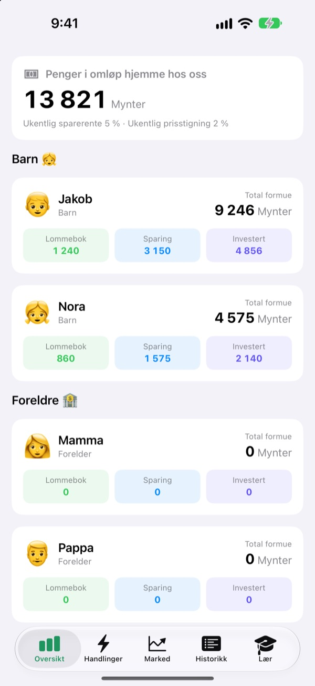
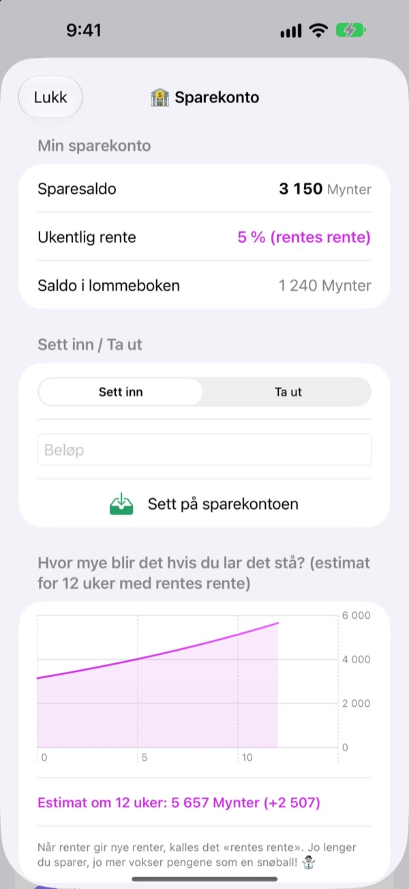
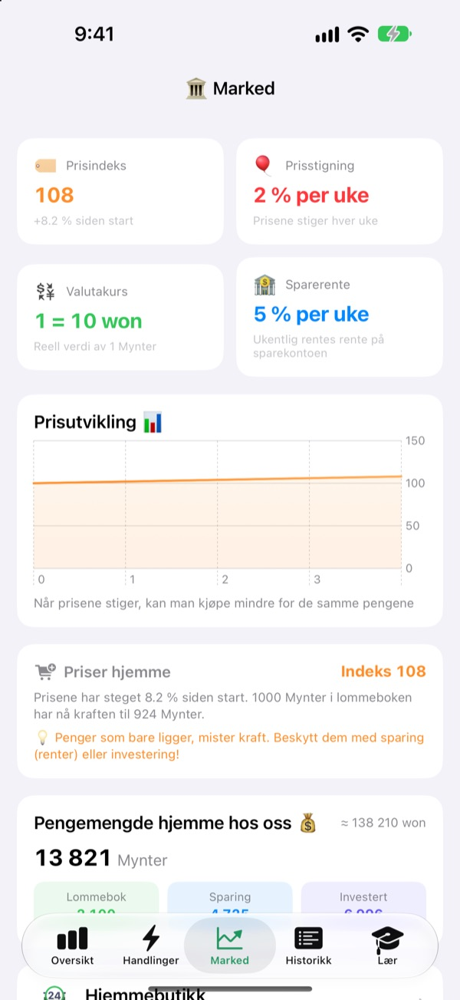
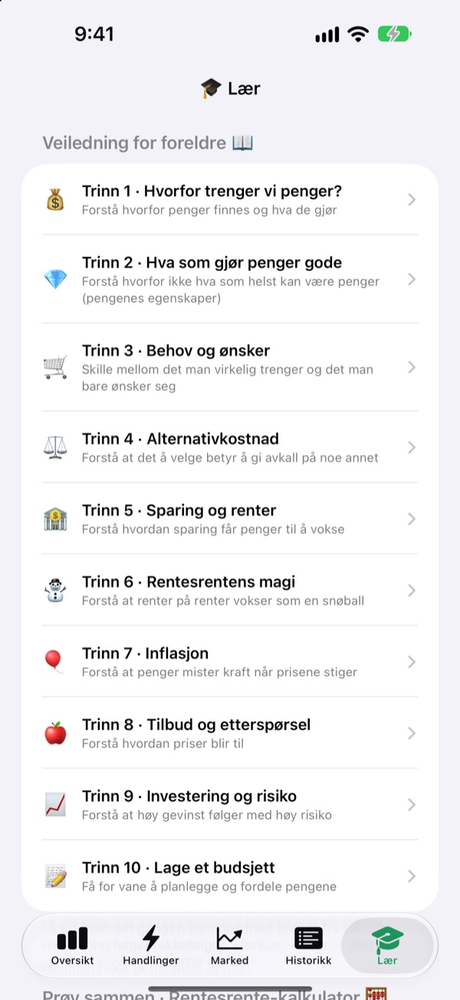

Lommepengedagen blir
en time om penger
Du er familiens sentralbank, og barna er kundene. De får lommepenger i deres egen valuta, kjøper godteri, ser renta lande på sparingen og kjenner på opp- og nedturene i et øvingsfond.
Alle funksjoner er gratis. Ekte penger brukes aldri.

Hvor ville du lagt 1 000 mynter?
De samme 1 000 myntene ligger i en lommebok, på sparing og i tre fond. Hopp én uke fram om gangen og se hva som skjer med hver av dem. Alt følger de samme reglene som appen.
«Spar, så vokser det.» Skjønner et barn det egentlig?
Rente, renters rente, inflasjon: Jo mer man forklarer, jo fjernere høres det ut. I SukSuk Lommepenger tjener, bruker og venter barna selv. Når de oppdager at forrige ukes sparing har fått rente, går de neste lommepengene rett inn på sparing.
Se tålmodighet lønne seg
Penger på sparing får renters rente hver uke. Du bestemmer renta, og en graf viser hva beløpet vokser til på 12 uker hvis det får ligge.
Ikke åpnet appen på noen dager? Når den åpnes, blir alle ukene den skylder utbetalt på én gang.

Se prisene spise av lommeboka
Fanen Marked samler familiens prisindeks, inflasjon, rente, pengemengde og fondspriser på én skjerm. Når prisene stiger, ser man hvor mye mindre 1 000 mynter i lommeboka nå kan kjøpe.
Barna ser i klare tall at penger som bare ligger, krymper, mens penger som spares eller investeres, holder verdien.

Ti samtaler å ta sammen
Veiledningen for foreldre tar dere gjennom ti trinn: hvorfor vi trenger penger, behov og ønsker, alternativkostnad, sparing og rente, renters rente, inflasjon, investering og risiko og til slutt et budsjett.
En renters rente-kalkulator og en kalkulator for priseksperimenter lar dere endre tallene og se hva som skjer.

I gang på tre trinn
- 1
Gi valutaen et navn
Bønner, Stjerner, Mynter, eller hva familien vil kalle den.
- 2
Velg en foreldre-PIN
Fire sifre. Bare den som kan den, kan gi lommepenger eller endre bankinnstillingene.
- 3
Legg til familien
Legg til barn og foreldre, gi de første lommepengene, og dere er i gang.
Hva ligger hvor
- Oversikt
- Alles lommebok, sparing og investeringer på ett blikk
- Handlinger
- Gi eller trekk fra lommepenger, Strekkode for vare, Legg til vare, Inviter barn, Barnetelefon-modus, Bankinnstillinger (krever foreldre-PIN)
- Marked
- Prisindeks, inflasjon, valutakurs, sparerente, pengemengde, fondspriser
- Historikk
- Hver pengebevegelse etter dato, medlem eller type
- Lær
- Veiledning for foreldre i ti trinn, renters rente-kalkulator, kalkulator for priseksperimenter
- 🐢 Skilpadde Trygg fond
- Små daglige svingninger, langsom og jevn stigning
- 🐰 Kanin Vekstaksjer
- Opp og ned, men de vokser
- 🚀 Rakett Eventyraksjer
- Kan skyte i været, kan stupe
Fra start er det 5 % ukentlig sparerente og 2 % ukentlig inflasjon. Begge endres i Foreldremodus under Bankinnstillinger. Med 0 % inflasjon står prisene stille.
Alle funksjoner er gratis
Gratis
- Deres egen familievaluta og en PIN-låst Foreldremodus
- Gi og trekke fra lommepenger, Hjemmebutikk og betaling med strekkode
- Sparing med renters rente hver uke
- Tre øvingsfond med avkastningsgrafer
- Fanen Marked og en datert transaksjonshistorikk
- Veiledningen for foreldre i ti trinn og to kalkulatorer
- Barnetelefon-modus og synkronisering med iCloud
Støtt utvikleren
- Send et lite tips i valgfri størrelse fra Bankinnstillinger i Foreldremodus
- Tips låser ikke opp noe. Appen fungerer helt likt
Ingen reklame, ingen abonnement. Tipsknappen finnes bare i Foreldremodus, så barna ser aldri en kjøpsknapp.
Spørsmål
Er det ekte penger involvert?
Nei. Valutaen og alle transaksjoner i appen er på liksom og bare for læring. Ingenting er koblet til en ekte bankkonto, et kort eller kontanter.
Hvordan ser vi de samme kontoene på barnets telefon?
Enheter som er logget på med samme iCloud-konto, synkroniserer familiens kontoer automatisk. Sjekk at iCloud er slått på under Innstillinger > Apple-konto > iCloud. Under Inviter barn på fanen Handlinger kan du lage en QR-invitasjon som barnet skanner med kameraet. Uten iCloud blir dataene bare på den ene enheten.
Hva er Barnetelefon-modus?
Den gjør barnets telefon til en skjerm bare for barnet. Barnet ser bare sin egen lommebok, sine investeringer, sin historikk og leksjonene, og det kreves foreldre-PIN for å gå ut.
Jeg har glemt foreldre-PIN-en.
PIN-en lagres bare på enheten, så ikke engang utvikleren kan gjenopprette den. Sletter du appen og installerer den på nytt, kan du sette den opp fra start, men da slettes også de eksisterende dataene.
Hvordan fungerer renta på sparingen?
Hver uke legges det automatisk renters rente til sparesaldoen. Du velger renta i Foreldremodus, og uker som har gått, gjøres opp neste gang appen åpnes.
Følger fondsprisene det ekte markedet?
Nei. Fondsprisene er øvingsdata som endres én gang om dagen i appen. Jo mer risikabelt fondet er, jo større svingninger. Det er ikke ekte finansprodukter.
Hvorfor stiger prisene?
For at barna skal kjenne på inflasjon, stiger familiens prisindeks litt hver uke. Du kan endre takten eller sette den til 0 % for å skru den av i Foreldremodus under Bankinnstillinger. Hever du samtidig prisene på godteri og leker i Hjemmebutikken litt, sitter lærdommen bedre.
Hvordan sletter jeg alt?
Når du sletter appen, forsvinner dataene på enheten. Data som er synkronisert til iCloud, sletter du under Innstillinger > Apple-konto > iCloud > Administrer lagringsplass.
Blir familiens opplysninger sendt noe sted?
Nei. Det er ingen registrering, og alle data blir på enheten din og i din egen iCloud-konto. Utvikleren får bare tilbakemeldinger du selv sender fra Foreldremodus, i tillegg til anonym bruksstatistikk og krasjrapporter.
Hvilke enheter fungerer den på?
iPhone med iOS 17.0 eller nyere.
Spørsmål, feil eller idéer? Skriv til leeo@kakao.com. Ta gjerne med enhetsmodell og iOS-versjon, så hjelper vi deg raskere.